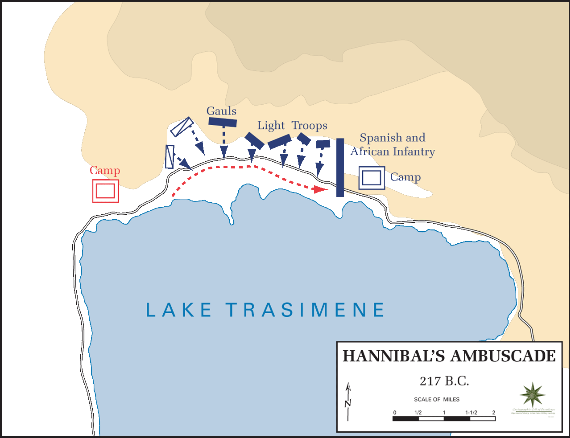

La Bataille du Lac Trasimène

Le contexte
En 217 av. J.-C., quelques mois après sa victoire à la Trébie, Hannibal continue d'avancer en Italie. Le nouveau consul romain Flaminius, humilié par les défaites précédentes, veut absolument rattraper Hannibal et le détruire.
Hannibal le sait et l'attire volontairement vers le lac Trasimène, en Toscane. Il choisit lui-même le terrain — un chemin étroit entre le lac et des collines boisées. L'endroit idéal pour un piège.
Source : Wikipedia — Bataille du lac Trasimène
Le piège parfait
Hannibal cache toute son armée dans les collines boisées qui surplombent le chemin. Le matin de la bataille, un épais brouillard recouvre le lac. Les légions romaines s'engagent sur le chemin sans rien voir, sans envoyer d'éclaireurs.
Quand toute l'armée romaine est coincée entre le lac et les collines, Hannibal donne le signal. Ses soldats surgissent de partout en même temps. Les Romains sont tellement surpris qu'ils n'ont même pas le temps de former leurs rangs de combat. C'est une boucherie.
Source : Wikipedia — Bataille du lac Trasimène
Le résultat
La bataille dure à peine 3 heures. Environ 15 000 soldats romains sont tués, dont le consul Flaminius lui-même. Des milliers d'autres se jettent dans le lac pour fuir et se noient.
C'est la deuxième grande défaite de Rome face à Hannibal en moins d'un an. La panique s'empare de Rome. Hannibal continue sa marche vers le sud de l'Italie, cherchant à convaincre les alliés de Rome de le rejoindre.
Source : Wikipedia — Bataille du lac Trasimène